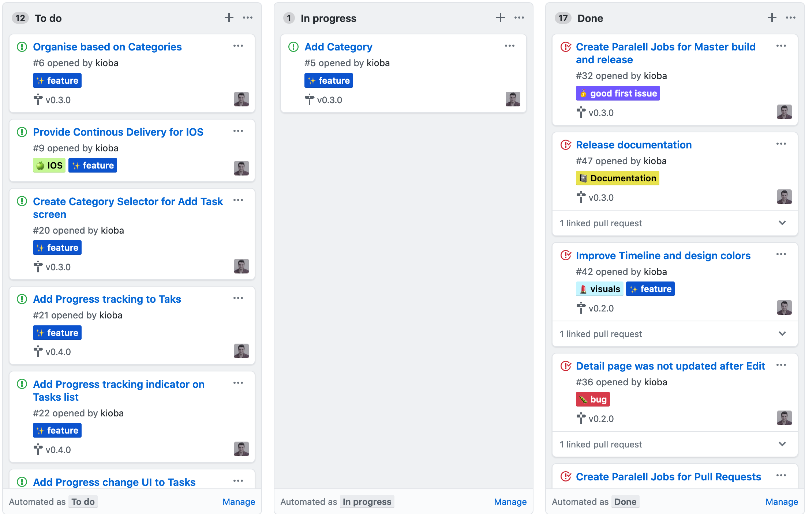
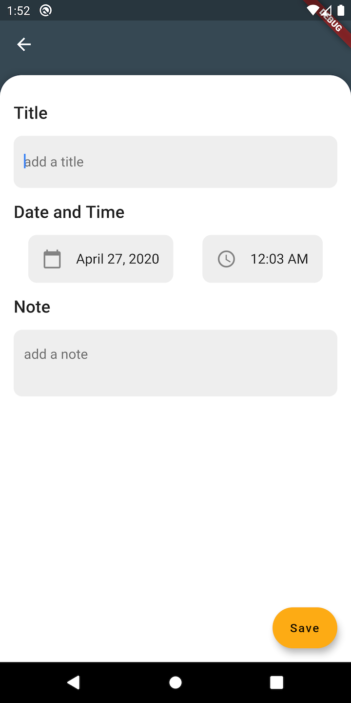
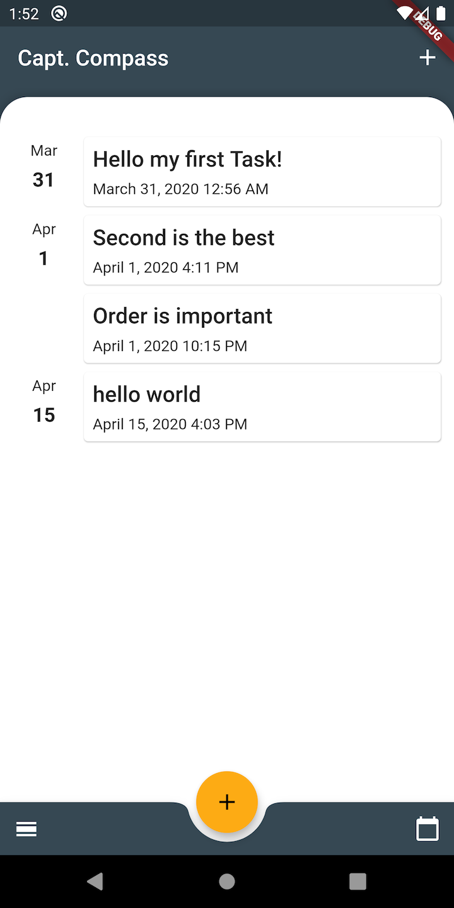
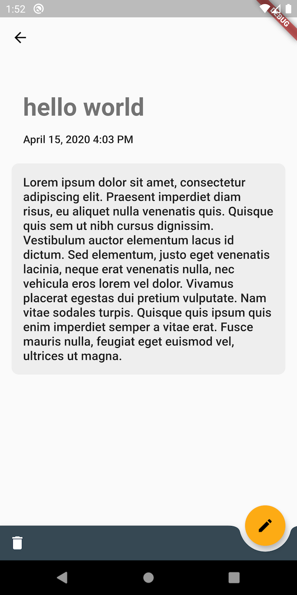
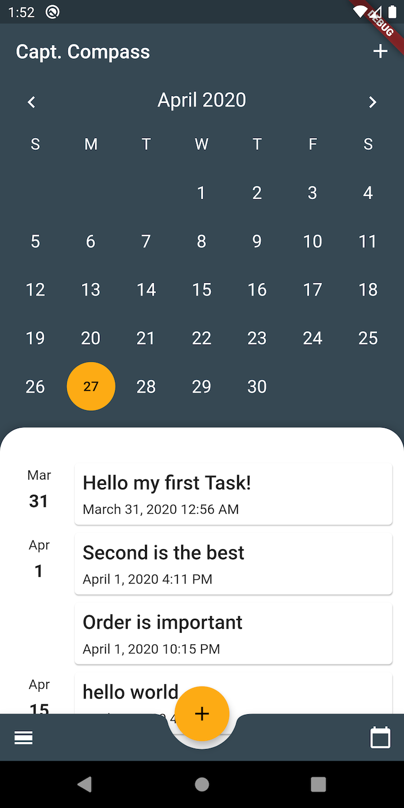

Capt Compass Episode 0
My first app and first season!
The idea
It takes a while to find a good niche on the app store, while I have been researching the field, I thought, it is a good idea to start building a tool for myself.
I needed a tool which lets me log my schedule and assign tasks to them. I have been using calendar and todo application to keep track my daily work in the office and day to day life but they felt so distant from each other. For that reason, I started this project to allow me to keep track of my life.
Design
I visited Dribble just to get a small amount of inspiration for the design. I was looking for a less illustration-heavy UI which doesn’t render the UX too complicated. I lack UI design experience, so I was keeping it a functional solution that allows me to make an easy start.
I found a surprisingly simple but same time manageable design. Bulky components with rounded edges are trendy and they are also easy to develop, so I decided to go with the following design.
 [
[There are a few weaknesses but good to get started. Later on, as the features evolve, I will revisit the design to fix UX issues.
Framework
Flutter has been on my radar for a while now but it always felt like a distant, futuristic framework. I wasn’t sure if it would be a good investment but curiosity always kept me in the loop. I have been visiting local meetup with friends and discussing the benefits and drawbacks of Flutter. I was always proud to develop with the platform frameworks. Lately, I felt the platform framework just pulls me back, so I choose Flutter for a project and I couldn’t be more right on this one.

Project
Github repository and kanban project has been set up with feature tickets. Milestones have been assigned splitting up the work between releases. Some tickets already have been moved to the done column and as the project continues to develop, new tickets will be created with new milestones.

Pull Requests
I am currently working alone, but that does not stop me using tools in the ecosystem to automate checks on my work. Github CI workflow has been created for PRs to keep master stable. The workflows execute the analyser tool, run the tests and builds the debug app. When The PR gets merged the same series of checks are going to be executed in release mode.
Creating releases
Creating a release has been automated. A tag creation on master branch triggers an alpha release build and publish but only for the Android Play Store currently. As an Android developer, I was familiar with how the Google ecosystem works for app publishing but I will include IOS release in the future.
Documentation
I was thinking about writing documentation for the project. As long as I’m in the learning phase and there is no co-author for the project I feel the docs would only generate overhead to my schedule. In the future, I might provide developer docs, for now, I keep it simple and essentials only.
Current progress
Users can add new tasks including a title, note and date. Without title and date, tasks can’t be created. I am still not decided yet to allow task creation without a date. Attaching task to a specific date feels necessary but skipping exact time might be possible in the future.
The tasks organised in due date order on the home screen. The month calendar behind the home page felt a good idea first but feels hidden after using the app for a while. I started to worry that the UX won’t allow the calendar discovery. A simple week view on the top of the page would be a better choice and I am planning to change in the close future.
| create page | home page |
|---|---|
|  |  |
Tasks now selectable, which takes the users to the detail screen. Currently functionality limited, but the title, notes and date already visible on the page. Deleting a task was one of the first features got added to the detail page. It boosted my confidence in the integration and helped me keep all the test clear.
Editing a task first sounds an easy assignment but quickly became a challenge. I modified the create screen to allow autofill if a task id provided with navigation. This was simple, until I realised, back navigation does not update the detail screen. Luckily, the Moor library provides stream capability for a query so any change in the database can be observed. Integrating the home and detail screen with stream solution resolved update issue but introduced architectural headaches.
| detail page | calendar view |
|---|---|
|  |  |
The architecture decision forced me to look up possible design patterns. I was stalling this for a while and I still didn’t feel the right time to start to deal with it. I tried out two alternatives, the simple provider and Bloc patterns.
The unidirectional dataflow from the Bloc pattern was promising but the lack of ADT support wasn’t ideal. It also needed extra code to implement and I felt struggle to navigate around the final codebase. I ended up scraping the Bloc pattern and go with an uncomplicated provider design.
It is a fair amount of work added to the project already but we are not close to the end! 0.2.0 has been released and it can be installed from the play store via the beta link.
As you can see, this release is already pre-alpha phase and far from stable. If you install the app, please remember that an update can remove any data, make sure data saved.
If you have any suggestion or bug report, feel free to reach out to me.
hope I will see you in the next episode!